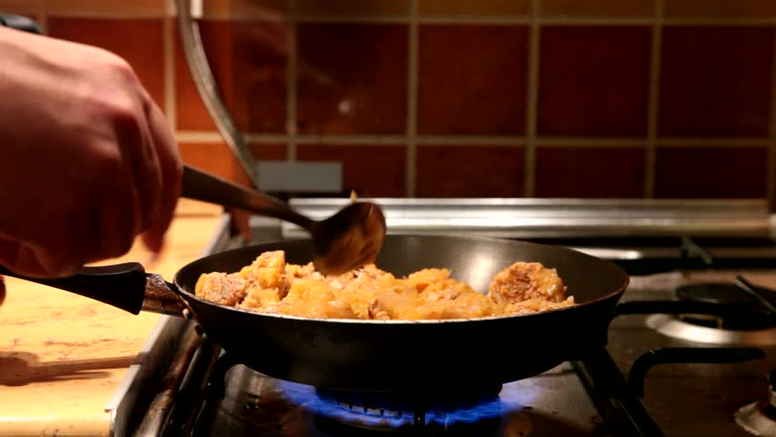

Keep clean
HOW?
- Wash your hands before handling food and often during food preparation
- Wash your hands after going to the toilet
- Wash and sanitize all surfaces and equipment used for food preparation
- Protect kitchen areas and food from insects, pests and other animals
WHY?
While most microorganisms do not cause disease, dangerous microorganisms are widely found in soil, water, animals and people. These microorganisms are carried on hands, wiping cloths and utensils, especially cutting boards, and the slightest contact can transfer them to food and cause foodborne diseases
Separate RAW and cooked
HOW?
- Separate raw meat, poultry and sea food from other foods
- Use separate equipment and utensils such as knives and cutting boards for handling raw food
- Store food in containers to avoid contact between raw and prepared food
WHY?
Raw food, especially meat, poultry and seafood, and their juices, can contain dangerous microorganisms which may be transferred onto other foods during food preparation and storage
Cook thoroughly
HOW?
- Cook food thoroughly, especially meat, poultry, eggs and seafood
- Bring foods like soups and stews to boiling to make sure that they have reached 70 °C. For meat and poultry, make sure that juices are clear, not pink. Ideally, use a thermometer
- Reheat cooked food thoroughly
WHY?
Proper cooking can kill almost all dangerous microorganisms. Studies have shown that cooking food to a temperature of 70 °C can help ensure it is safe for consumption. Foods that require special
attention include minced meats, rolled roasts, large joints of meat, and whole poultry.
Keep food at safe temperatures
HOW?
- Do not leave cooked food at room temperature for more than 2 hours
- Refrigerate promptly all cooked and perishable food (preferably below 5 °C)
- Keep cooked food piping hot (more than 60 °C) prior to serving
- Do not store food too long even in the refrigerator
WHY?
Microorganisms can multiply very quickly if food is stored at room temperature. By holding at temperatures below 5 °C or above 60 °C, the growth of microorganisms is slowed down or stopped. Some dangerous microorganisms still grow below 5 °C.
